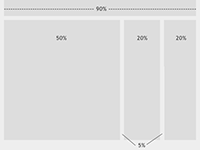

Responsive web design
Responsive web design (RWD) is a web design approach aimed at crafting sites to provide an optimal viewing experience–easy reading and navigation with a minimum of resizing, panning, and scrolling–across a wide range of devices (from mobile phones to desktop computer monitors).[1][2][3]
A site designed with RWD[1][4]
adapts the layout to the viewing environment by using fluid, proportion-based grids,[5]
flexible images,[6][7][8][9]
and CSS3 media
queries,[3][10][11]
an extension of the @media rule.[12]
- The fluid grid concept calls for page element sizing to be in relative units like percentages, rather than absolute units like pixels or points.[5]
- Flexible images are also sized in relative units, so as to prevent them from displaying outside their containing element.[6]
- Media queries allow the page to use different CSS style rules based on characteristics of the device the site is being displayed on, most commonly the width of the browser.
- Server-side components (RESS) in conjunction with client-side ones such as media queries can produce faster-loading sites for access over cellular networks and also deliver richer functionality/usability avoiding some of the pitfalls of device-side-only solutions.[13]
More Information
For more information, enter your contact details below and we’ll subscribe you to our newsletter about RWD.
Types of layout
Fixed layout
As the browser size is adjusted, the content remains a fixed width within it. Sometimes fixed width layouts are centred in the browser.
Fluid layout
Fluid layouts adjust their size to fit or relative to the size of the browser. As the browser is resized the content area will resize with it.
Adaptive layout
A combination of fixed and fluid layouts. The layout may change from a fixed layout to a fluid layout when the browser width reaches a particular threshold.
Related concepts
Audience and Device Aware (ADA)
Audience and Device Aware is an approach aimed at ensuring that a site is optimised to deliver what a user wants and that works effectively on the device being used to access the site. Unlike Responsive web design (RWD),which crafts a site visually for a range of devices, ADA aims to reflect the many different elements that enhance and impact on the performance and usability of a site. The predominant application for the ADA approach is for mobile and smaller screen devices. The principle truly sees the adoption of a “mobile first” strategy and focuses on the performance of a site and value that it delivers to a user and the business.
Mobile first, unobtrusive JavaScript, and progressive enhancement
"Mobile first", unobtrusive JavaScript, and progressive enhancement (strategies for when a new site design is being considered) are related concepts that predated RWD: browsers of basic mobile phones do not understand JavaScript or media queries, so the recommended practice is to create a basic web site, and enhance it for smart phones and PCs–rather than try graceful degradation to make a complex, image-heavy site work on the most basic mobile phones.[14][15][16][17]

Progressive enhancement based on browser-, device-, or feature-detection
Where a web site must support basic mobile devices that lack JavaScript, browser ("user agent") detection (also called "browser sniffing"), and mobile device detection[15][18] are two ways of deducing if certain HTML and CSS features are supported (as a basis for progressive enhancement)–however, these methods are not completely reliable unless used in conjunction with a device capabilities database.
For more capable mobile phones and PCs, JavaScript frameworks like Modernizr, jQuery, and jQuery Mobile that can directly test browser support for HTML/CSS features (or identify the device or user agent) are popular. Polyfills can be used to add support for features–e.g. to support media queries (required for RWD), and enhance HTML5 support, on Internet Explorer. Feature detection also might not be completely reliable: some may report that a feature is available, when it is either missing or so poorly implemented that it is effectively nonfunctional.[19][20]
Challenges, and other approaches
Luke Wroblewski has summarized some of the RWD and mobile design challenges, and created a catalog of multi-device layout patterns.[21][22][23] He suggests that, compared with a simple RWD approach, device experience or RESS (responsive web design with server-side components) approaches can provide a user experience that is better optimized for mobile devices.[24][25][26] Server-side "dynamic CSS" implementation of stylesheet languages like Sass or Incentivated's MML can be part of such an approach by accessing a server based API which handles the device (typically mobile handset) differences in conjunction with a device capabilities database in order to improve usability.[27] RESS is more expensive to develop of course, requiring more than just client-side logic, and so tends to be reserved for organisations with larger budgets.
One problem for RWD is that banner advertisements and videos are not fluid.[28] However search advertising and (banner) display advertising support specific device platform targeting and different advertisement size formats for desktop, smartphone, and basic mobile devices. Different landing page URLs can be used for different platforms,[29] or Ajax can be used to display different advertisement variants on a page.[18][22][30]
There are now many ways of validating and testing RWD designs,[31] ranging from mobile site validators and mobile emulators[32] to simultaneous testing tools like Adobe Edge Inspect.[33] The Firefox browser and the Chrome console offer responsive design viewport resizing tools, as do third parties.[34][35]
History
Ethan Marcotte coined the term responsive web design (RWD) in a May 2010 article in A List Apart.[1] He described the theory and practice of responsive web design in his brief 2011 book titled Responsive Web Design. Responsive design was listed as #2 in Top Web Design Trends for 2012 by .net magazine[36] after progressive enhancement at #1. They also listed 20 of Ethan Marcotte's favourite responsive sites.[2]
Mashable called 2013 the Year of Responsive Web Design.[37] Many other sources have recommended responsive design as a cost-effective alternative to mobile applications.
Forbes explains why you need to prioritize responsive design right now.[38]
In late 2012, Google recommended responsive design in its Webmaster’s Guide: “Google recommends webmasters follow the industry best practice of using responsive web design, namely serving the same HTML for all devices and using only CSS media queries to decide the rendering on each device.” [39]
See also
References
- Marcotte, Ethan (May 25, 2010). "Responsive web design". A List Apart.
- "Ethan Marcotte's 20 favourite responsive sites". .net magazine. October 11, 2011.
- Gillenwater, Zoe Mickley (Dec. 15, 2010). "Examples of flexible layouts with CSS3 media queries". Stunning CSS3. p. 320. ISBN 978-0-321-722133.
- Pettit, Nick (Aug. 8, 2012). "Beginner’s Guide to Responsive Web Design". TeamTreehouse.com blog.
- Marcotte, Ethan (March 3, 2009). "Fluid Grids". A List Apart.
- Marcotte, Ethan (June 7, 2011). "Fluid images". A List Apart.
- "Adaptive Images".
- Hannemann, Anselm (Sept. 7, 2012). "The road to responsive images". net Magazine.
- Jacobs, Denise (August 23, 2011). "21 top tools for responsive web design". .net Magazine.
- Gillenwater, Zoe Mickley (Oct. 21, 2011). "Crafting quality media queries".
- "Responsive design–harnessing the power of media queries". Google Webmaster Central. Apr. 30, 2012.
- W3C @media rule
- http://www.gomonews.com/gatwick-airport-site-suddenly-becomes-user-unfriendly
- Wroblewski, Luke (November 3, 2009). "Mobile First".
- Firtman, Maximiliano (July 30, 2010). Programming the Mobile Web. p. 512. ISBN 978-0-596-80778-8.
- "Graceful degradation versus progressive enhancement". February 3, 2009.
- Designing with Progressive Enhancement. March 1, 2010. p. 456. ISBN 978-0-321-65888-3.
- "Server-Side Device Detection: History, Benefits And How-To". Smashing magazine. September 24, 2012.
- "BlackBerry Torch: The HTML5 Developer Scorecard | Blog". Sencha. 2010-08-18. Retrieved 2012-09-11.
- "Motorola Xoom: The HTML5 Developer Scorecard | Blog". Sencha. 2011-02-24. Retrieved 2012-09-11.
- Wroblewski, Luke (May 17, 2011). "Mobilism: jQuery Mobile".
- Wroblewski, Luke (February 6, 2012). "Rolling Up Our Responsive Sleeves".
- Wroblewski, Luke (March 14, 2012). "Multi-Device Layout Patterns".
- Wroblewski, Luke (February 29, 2012). "Responsive Design ... or RESS".
- Wroblewski, Luke (September 12, 2011). "RESS: Responsive Design + Server Side Components".
- Andersen, Anders (May 9, 2012). "Getting Started with RESS".
- "Responsive but not completely mobile optimised | Blog". Incentivated.
- Snyder, Matthew; Koren, Etai (Apr. 30, 2012). "The state of responsive advertising: the publishers' perspective". .net Magazine.
- Google AdWords Targeting (Device Platform Targeting)
- JavaScript and Responsive Web Design Google Developers
- Young, James (Aug. 13, 2012). "Top responsive web design problems... testing". .net Magazine.
- "Best mobile emulators and RWD testing tools". The Mobile Web Design Blog. Nov. 26, 2011.
- Rinaldi, Brian (September 26, 2012). "Browser testing... with Adobe Edge Inspect".
- Responsive Design View in Firefox
- Viewport resizer
- "15 top web design and development trends for 2012". .net magazine. January 9, 2012.
- Cashmore, Pete (Dec 11, 2012). "Why 2013 Is the Year of Responsive Web Design".
- Gunelius, Susan (Mar 26, 2013). "Why You Need to Prioritize Responsive Design Right Now".
- "Building Mobile-Optimized Websites". Dec 3, 2012.